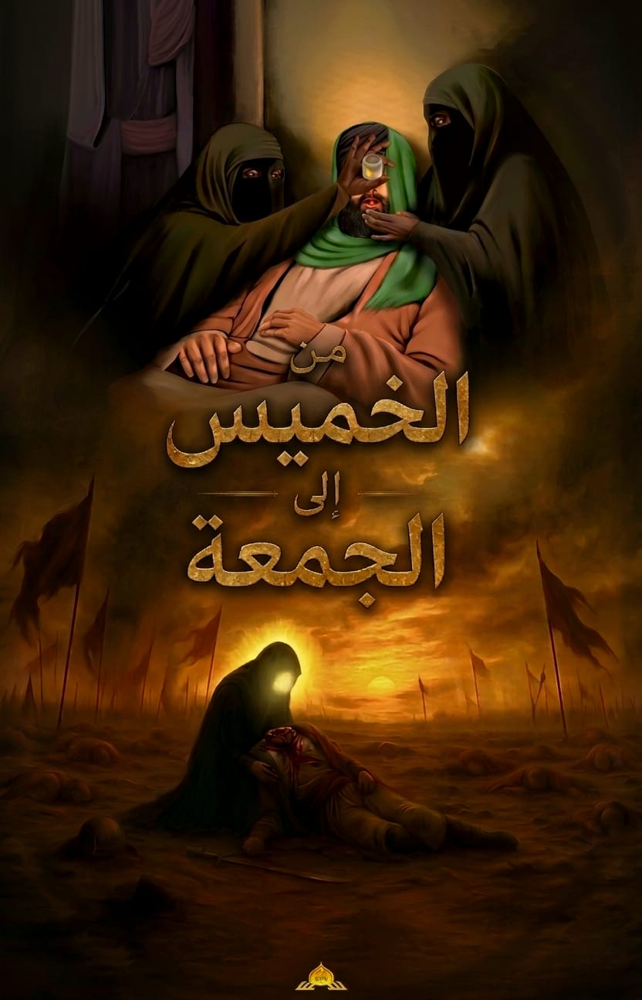

نور الولاية
من الخميس إلى الجمعة

عن ماذا يتحدث هذا الكتاب ؟
كتاب من الخميس الى الجمعة هو بحث تاريخي–عقائدي يستعرض وقائع مؤلمة ومفصلية في التاريخ الإسلامي، تمتد من يوم الخميس الذي شهد "رزية الدواة والكتف" في أواخر حياة النبي الأعظم صلى الله عليه وآله وسلم، وصولًا إلى فاجعة استشهاد الإمام الحسين عليه السلام يوم الجمعة في كربلاء.
يرتكز المؤلِّف على روايات صحيحة ومعتبرة في كتب أهل السنة (البخاري، مسلم، وغيرها) ليكشف عن خيوط مؤامرة محكمة، بدأت بعصيان أمر النبي صلى الله عليه وآله وسلم في لحظاته الأخيرة، وتطورت إلى محاولة التغيير على وصاياه، ثم انتهت باغتصاب الخلافة من أهل البيت عليهم السلام ، وتهميش وصاياهم، وإقصائهم عن قيادة الأمة.
من الخميس إلى الجمعة
من رزية المنع إلى رزية الذبح